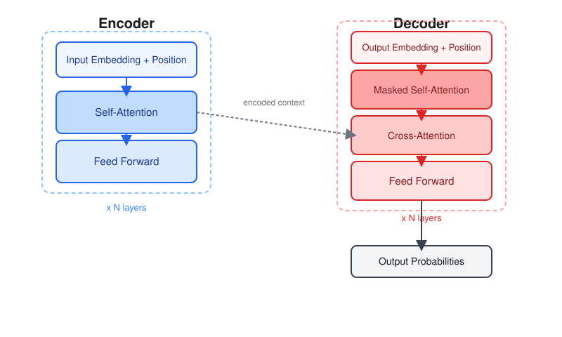
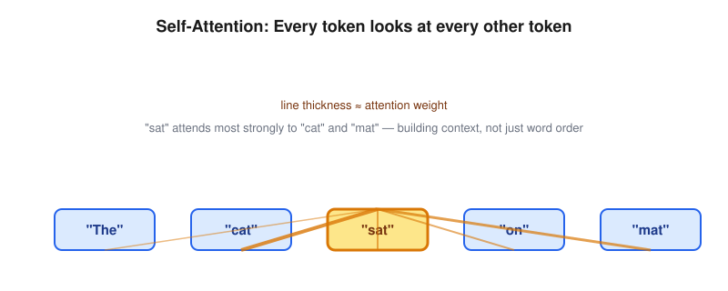
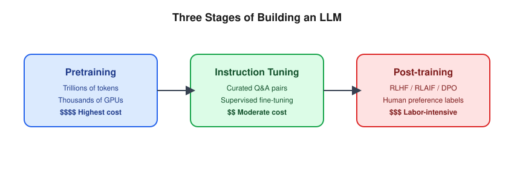
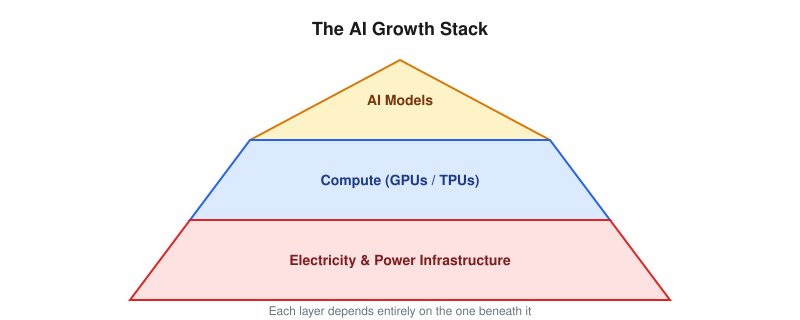
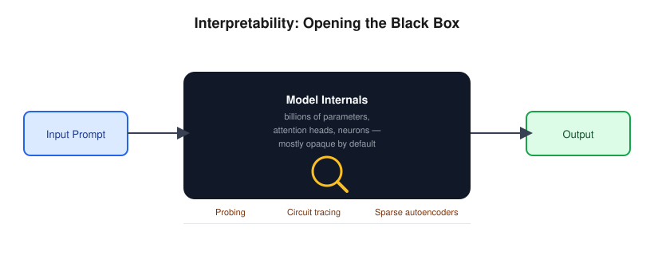
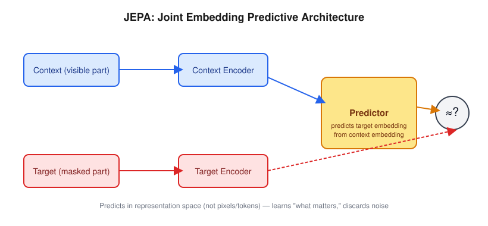

A Technical Lecture



| Stage | What Happens | Relative Cost |
|---|---|---|
| Pretraining | Learn language/world patterns from trillions of tokens | Highest (M–100M+) |
| Instruction Tuning (SFT) | Teach the model to follow instructions using curated Q&A pairs | Moderate |
| Post-training (RLHF/RLAIF/DPO) | Align outputs with human preferences, safety, style | Moderate–High (labeling is expensive) |


Joint Embedding Predictive Architecture
